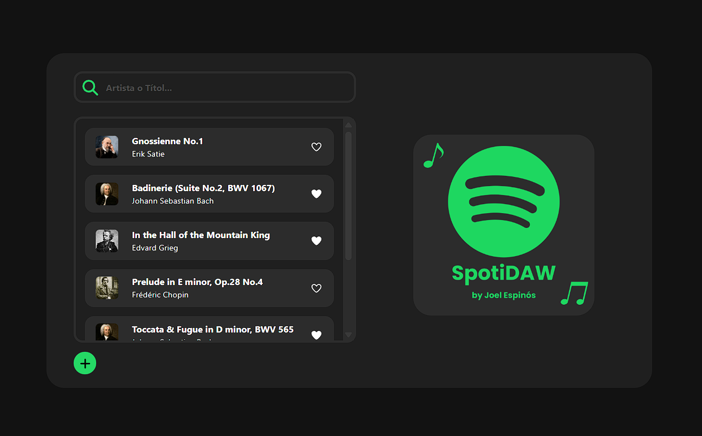

SpotiDAW Music Player
- HTML
- CSS
- Bootstrap
- TypeScript
- Angular
Reproductor de música desarrollado con Angular 20, implementa zoneless y la estrategia OnPush para la detección de cambios. La aplicación permite subir canciones, buscar por título o artista, reproducir canciones directamente desde el navegador.